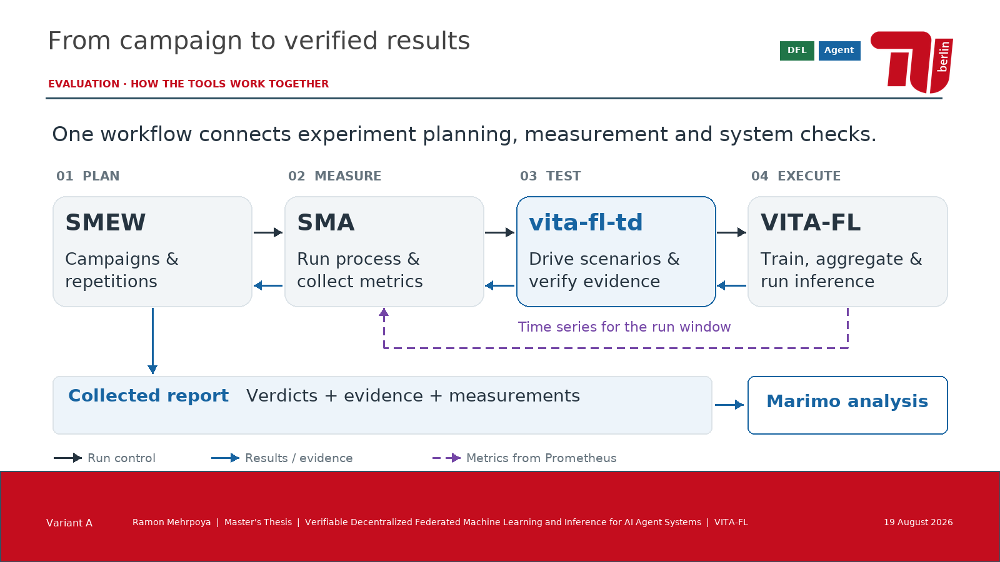
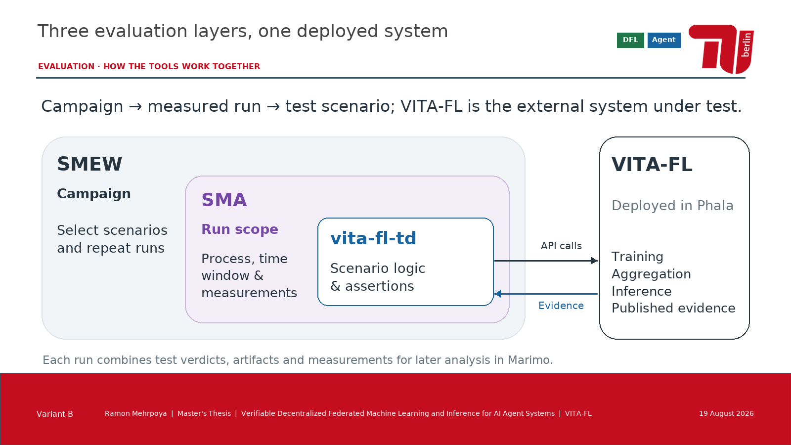
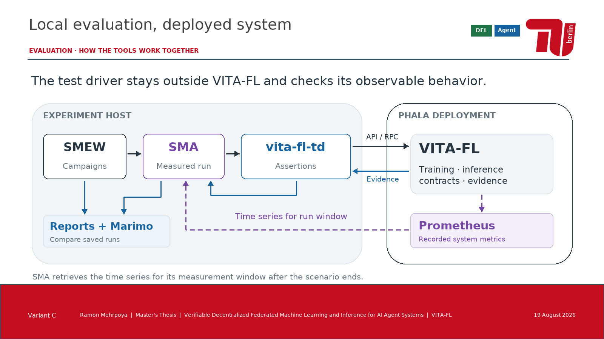
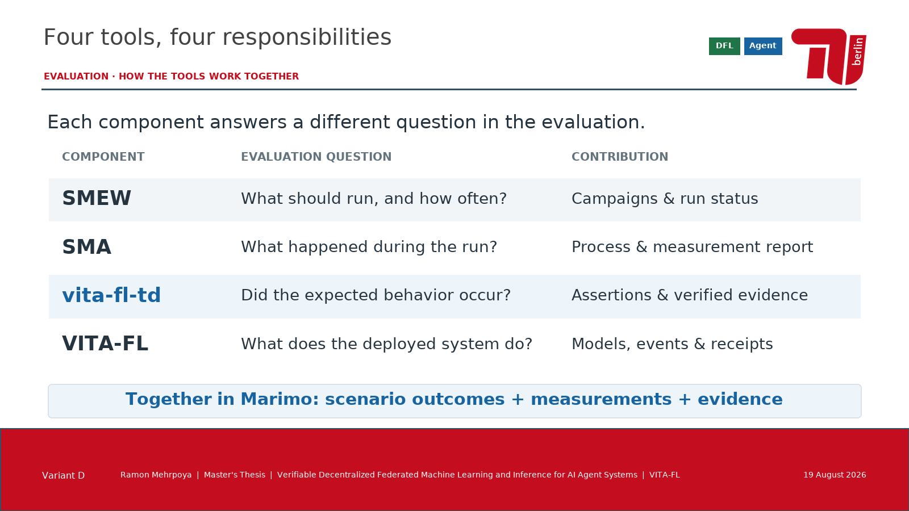

A · AblaufketteWer startet wen, und wie werden Ergebnisse gesammelt?  PowerPointBild öffnen
B · Verschachtelte EbenenKampagne, Messlauf und Szenario als ineinanderliegende Verantwortungen.  PowerPointBild öffnen
C · Testrechner und PhalaWo die Komponenten laufen und wie Steuerung, Belege und Messdaten fließen.  PowerPointBild öffnen
D · Vier RollenEine kompakte Übersicht: Welche Frage beantwortet jedes Werkzeug?  PowerPointBild öffnen